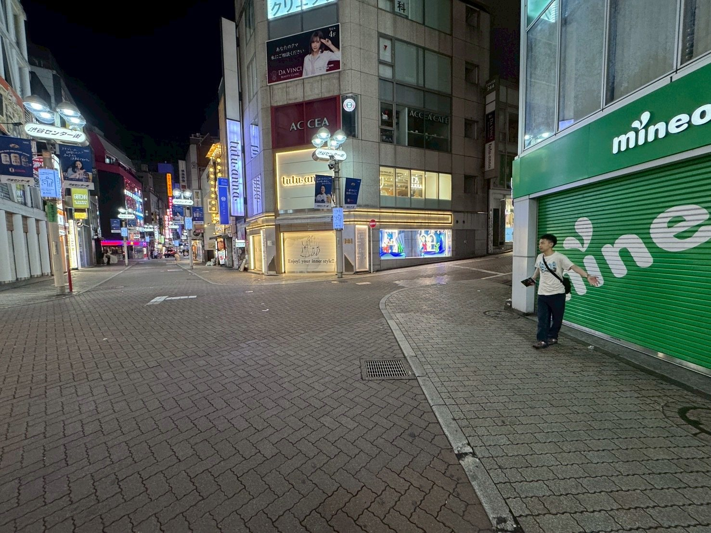
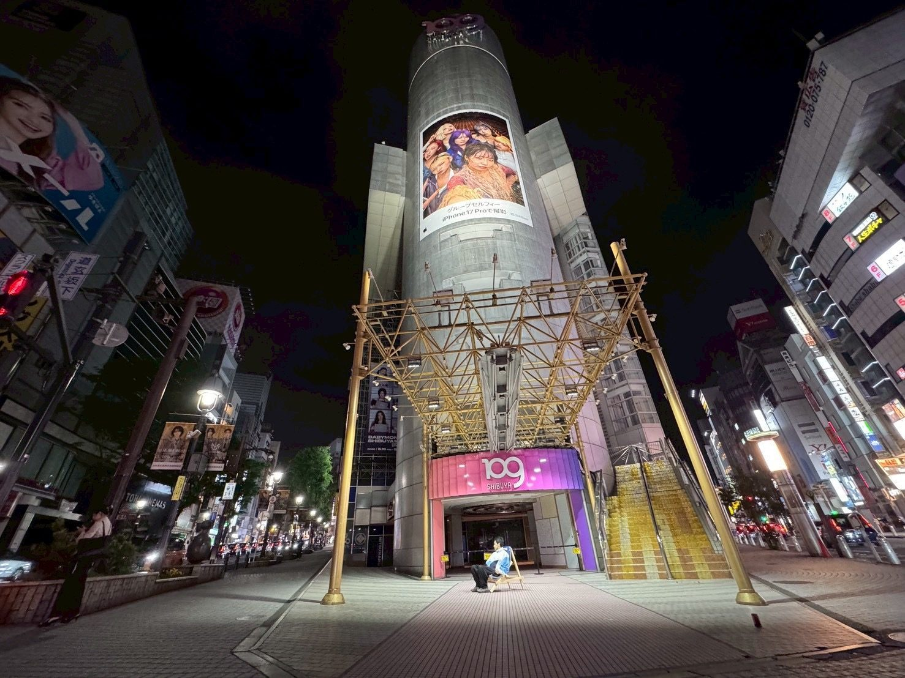
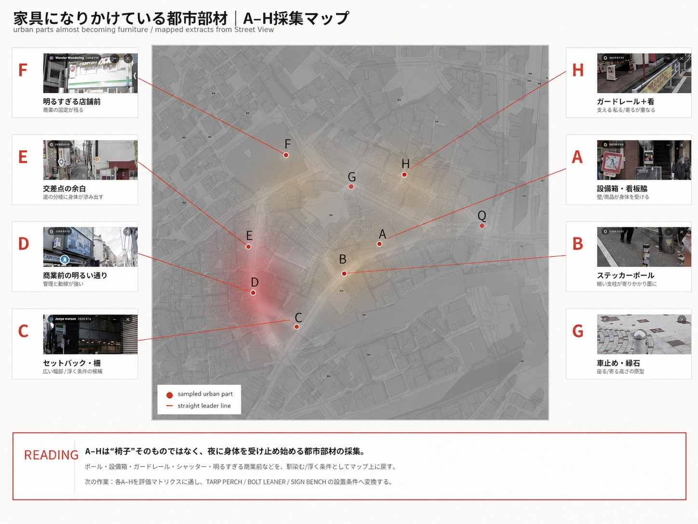

01終電後の渋谷｜観測者から介入者へ

SHIBUYA AFTER LAST TRAIN
ばらばらなままに、ともにいる—渋谷の夜具
昼は広告を支える外壁が、夜には身体と行為を支える家具になる。
渋谷に足りないのは、もう一つの大きなビルではない。人が少し座る。歌う。休む。つくる。直す。そのための小さな引き出しを、街へ貸し出す。
Enter the Night00 / Final Presentation
Webは発表本編を長く説明し直す場所ではなく、10枚のスライドの背景、記録、Detail、Lineageを補助するアーカイブとして読む。
00B / Final Review Routes
発表本編はこのページで読む。詳細を確認したいときは、観察記録、地下鉄入口ライブ実験、構法整理、背景の4ページへ分岐する。
2026.06.19 / Night Session
6/19は、準備された実験ではなく、偶然出会ったNight Sessionとして扱う。自然発生した弾き語りをきっかけに、通行人が立ち止まり、座り、一時的な観客となった。
閉じたシャッター、階段、路面は、夜の背景と座る場所へ読み替えられた。
この日の出来事は、完成された計画ではなく、都市の中ですでに始まっていた行為との邂逅だった。そこから、家具は場をゼロからつくるのではなく、すでに始まっている音と関係を支えるべきだと考えた。
Night Sessionを読む Field Notesへ2026.07.03-07.04 / Underground Live
7/3-7/4は、地下鉄入口の段差、シャッター、通行の縁を使い、演奏とL字部材を同時に試した実験として整理する。
01 / Concept
本提案は「ベンチを増やす」計画ではない。都市がすでに持っている柵、柱、看板、設備箱の読み方を変え、終電後にだけ現れる一時的な公共性を観測し、設計するための研究である。
02 / Night Timeline
終電から始発までの渋谷を、観察された行為の単位で時刻ごとに分節する。スクロールに合わせて時間が進む。
03 / Observation Map
観察地点を線でつなぐことで、写真は単体の記録から、終電後の渋谷を読むための連続したフィールドワークへ変わる。

A–H は「椅子」そのものではなく、夜に身体を受け止め始める都市部材の採集。各点を評価マトリクス（05B）に通し、TARP PERCH / BOLT LEANER / SIGN BENCH の設置条件へ変換する。
04 / Field Notes
単なるギャラリーではない。category、観察、設計への翻訳が並走する観察カード群。
該当する観察カードはありません。
05 / Urban Parts Archive
渋谷の夜を支える一時的な居場所は、最初からベンチとして用意されているわけではない。U字柵、車止め、標識柱、看板、設備箱、段差、路上に置かれた缶や荷物。それらの小さな都市部材が、終電後には身体を預けるための下地として読み替えられる。
該当する標本がありません。
CONTACT SHEET · MATERIAL LIBRARY · 観察→家具化の翻訳源
05B / Classification Matrix
写真根拠付き仮説 v2。13の都市部材と7つの夜間行為を交差させ、どの部材がどの行為を支えうるかを記号で示す。最終観察データではなく、写真339枚の代表選定を根拠にした仮説。
06 / Transformation
夜に発見された行為を都市部材に重ね、家具プロトタイプへ翻訳する。本研究の中心となる5つの変換。
07 / Furniture Prototypes
擬態 / 起動 / 撤退。昼は都市設備に紛れ、夜は身体を受け止め、朝には街の表層に戻る。
07B / Design Works
観察と分類から抜き出した都市部材を、寸法と接合をもつ実制作の案へ翻訳する。座る・寄る・置くを、最小の介入で街路に挿し込む。
FROM OBSERVATION
TO INTERVENTION
OBSERVE → ENCOUNTER → DESIGN PIVOT
FIELD REPORT 04
2026.06.19 / NIGHT SESSION
ACT 4
音が、人を止めた。
家具を置く前に、
弾き語りが通行人を止め、
一時的な観客をつくった。
01 / Before
昼の商業空間が、夜には滞在を受け止める背景へ変わる。シャッター前の路面や階段には、短時間の滞在を受け入れる余地が残されていた。
02 / Encounter
音をきっかけに、人が止まり、同じ方向を向く。立っていた通行人が、一時的な観客へ変わっていった。
03 / First Listeners
知らない人同士が同じ方向を向き、短い時間と音を共有した。※ EXIF日時は一部のみのため、撮影時刻順ではなく場面の推移として並べている。
04 / Findings
06 / Management Condition
場が立ち上がるほど、音量、通行、苦情、管理、撤収性も同時に設計条件になる。これは対立の記録ではなく、公共空間で一時的な場が許容される条件を確かめる観察である。
07 / Design Pivot
音が人を止める。小さな道具が、その滞在を支える。そこでQフロントを、表現者のための引き出しを街へ貸し出す大きな道具棚として読み替える。
08 / Drawings & Model
本番素材に差し替え可能な構造。下記の枠は assets/drawings/ / assets/maps/ / assets/prototypes/ の本番ファイルで置き換える。
09 / Conclusion